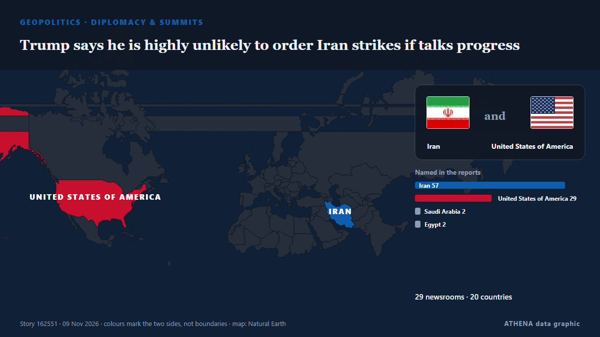

Trump says he is highly unlikely to order Iran strikes if talks progress

WASHINGTON/CAIRO, Nov 8 (Reuters) - US PresidentDonald Trump on Sunday said he was highly unlikely to order fresh attacks on Iran as long as talks to end the conflict progress, even as both countries… from Al-Monitor
Reported independently by 46 outlets in 31 countries since 8 Nov, first by The New Arab; coverage is fading. ATHENA rates the risk high (6.4/10), driven mainly by the severity of the harm described and its geographic and sector reach. Confidence is 90% (high), with 46 independent outlets corroborating it and an average source reliability of 76%. Outlets by country: United States (4), Israel (3), Turkey (2). Coverage: 8 Nov to 9 Nov, 19 hours.
Why it matters: The Strait of Hormuz links the Persian Gulf to the open ocean. Roughly a fifth of the oil consumed worldwide passes through it, so attacks on shipping or threats to close it move energy prices and insurance costs within hours.
What changed: 47 new reports from 42 outlets in the 24 hours to 9 Nov.
First reported as: Trump says return to war with Iran ‘highly unlikely’ if negotiations produce progress
How to read this page
- What you are reading
- 46 outlets in 31 countries reported this event. The reports below are listed in the order they appeared; each headline opens the original article. ATHENA writes none of the reports.
- Our reading
- Under watch — The reports describe action, or a decision still to be taken, between states or armed groups. ATHENA follows what happens next. We look for four kinds of development: nothing further, an open action that someone claims, an action through others or without a claim, and an accident or misreading. We do not predict which will happen.
- How much evidence
- Strong Many independent outlets in many countries describe the same event.
After repeats, off-topic items and stale reports are removed, 23 of the 40 listed reports are counted; 100% of the headlines match the event.
- What this does not mean
- ATHENA measures how an event is reported, not whether it is true. This is not a forecast, a judgement on who is right, or advice.
- What would change it
- Reports from other independent outlets showing a different development, or a firm confirmation or denial from an official source.
Reading R2 · refreshed with every update of this page. ATHENA has not yet published a track record for these readings; when it does, it will be linked here.
At a glance
Selected, scored and written by ATHENA's published methodology. No editor intervenes in individual events. How this is produced ›
| 08 Nov 09:31 UTC | 1 |
|---|---|
| 08 Nov 10:31 UTC | 0 |
| 08 Nov 11:31 UTC | 0 |
| 08 Nov 12:31 UTC | 0 |
| 08 Nov 13:31 UTC | 0 |
| 08 Nov 14:31 UTC | 1 |
| 08 Nov 15:31 UTC | 0 |
| 08 Nov 16:31 UTC | 0 |
| 08 Nov 17:31 UTC | 3 |
| 08 Nov 18:31 UTC | 7 |
| 08 Nov 19:31 UTC | 5 |
| 08 Nov 20:31 UTC | 7 |
| 08 Nov 21:31 UTC | 1 |
| 08 Nov 22:31 UTC | 1 |
| 08 Nov 23:31 UTC | 2 |
| 09 Nov 00:31 UTC | 3 |
| 09 Nov 01:31 UTC | 5 |
| 09 Nov 02:31 UTC | 1 |
| 09 Nov 03:31 UTC | 2 |
| 09 Nov 04:31 UTC | 1 |
| 09 Nov 05:31 UTC | 3 |
| 09 Nov 06:31 UTC | 1 |
| 09 Nov 07:31 UTC | 1 |
| 09 Nov 08:31 UTC | 1 |
| 09 Nov 09:31 UTC | 1 |
| 09 Nov 10:31 UTC | 1 |
| 08 Nov 18:04 UTC | 4.6 |
|---|---|
| 08 Nov 18:07 UTC | 5.8 |
| 08 Nov 21:24 UTC | 6.6 |
| 09 Nov 01:54 UTC | 6.8 |
| 09 Nov 10:42 UTC | 6.4 |
Why these numbers
Importance
Risk
Confidence
The reporting — who reported it, and when
headline as published · opens the original- The New Arab · INTTrump says 'unlikely' to attack Iran, Araghchi warns US on talks
- Al-Monitor · United StatesTrump says he is highly unlikely to order Iran strikes if talks progress
- Anadolu Agency (English) · TurkeyTrump says return to Iran war 'highly unlikely' if talks advance
- The Jerusalem Post · IsraelTrump says return to war with Iran ‘highly unlikely’ if negotiations produce progress
- Türkiye Today · TurkeyTrump says renewed war with Iran ‘highly unlikely’ if talks yield a strong deal
- Haaretz (English) · IsraelTrump tells CNN he is 'highly unlikely' to order Iran attack if talks progress
- TASS (English) · RussiaNew attacks on Iran ‘highly unlikely,’ Trump says
- Al-Monitor · United StatesTrump says he is unlikely to order Iran attack if talks progress, CNN reports
- Middle East Eye · INTTrump says fresh strikes on Iran ‘highly unlikely’ if talks progress
- APA (English) · AzerbaijanTrump says renewed attacks on Iran ‘highly unlikely’ if talks show progress
- Arab News · Saudi ArabiaTrump says he is highly unlikely to order Iran strikes if talks progress
- Times of India · India‘They’re a failing nation’: Trump says fresh Iran strikes ‘highly unlikely’
- The Daily Star — page reader · BangladeshTrump says resumption of war with Iran 'highly unlikely'
- Daily Maverick · South AfricaTrump says he is highly unlikely to order Iran strikes if talks progress
- Kurdistan24 (English) · IraqTrump Says Renewed US-Iran Fighting ‘Highly Unlikely’ If Talks Progress
- SBS News · AustraliaDonald Trump says he is 'highly unlikely' to order Iran strikes if talks progress
- The Straits Times · SingaporeTrump says resumption of war with Iran ‘highly unlikely’
- Free Malaysia Today · MalaysiaTrump says resumption of war with Iran ‘highly unlikely’
- DW English · GermanyIran: Trump says strikes unlikely if peace talks keep moving
- Israel Hayom (English) · IsraelTrump: Renewed strikes on Iran 'highly unlikely'
- The Hill · United StatesTrump says he's 'unlikely' to renew attacks on Iran if talks show progress
- CNA (Channel NewsAsia) · SingaporeTrump says he is highly unlikely to order Iran strikes if talks progress
- investingLive (ForexLive) · INTWeekend: Trump says new Iran strikes ‘highly unlikely’ five times (but three carriers stay ready)
- CNBC World · United StatesTrump says renewed Iran strikes ‘highly unlikely’ if talks progress but warns he could still strike
- Iran International (English) · IranTrump signals openness to Iran deal amid renewed Hormuz tensions
- FXStreet · SpainUS President Donald Trump says new Iran strikes unlikely if talks progress
- Business Recorder · PakistanTrump says resumption of war with Iran ‘highly unlikely’
- The New Arab · INTTrump says highly unlikely to resume Iran war if talks progress
- Xinhua (English) — page reader · ChinaTrump says renewed strikes on Iran "highly unlikely" if talks progress
- Ada Derana · Sri LankaTrump says he is highly unlikely to order Iran strikes if talks progress
- BusinessWorld · PhilippinesTrump says he is highly unlikely to order Iran strikes if talks progress
- Times of India · IndiaBrent crude falls over $1 as Trump signals fresh US strikes on Iran are unlikely
- The Business Standard (Bangladesh) (working feed) · BangladeshTrump says he is highly unlikely to order Iran strikes if talks progress
- Ada Derana · Sri LankaOil falls on open as Trump says fresh Iran attacks 'unlikely'
- MyJoyOnline · GhanaOil falls as Trump says new Iran attacks ‘unlikely’
- MyJoyOnline · GhanaTrump says he is highly unlikely to order Iran strikes if talks progress
- The Kathmandu Post · NepalTrump says he is highly unlikely to order Iran strikes if talks progress
- Gulf News · United Arab EmiratesOil dips again on Iran talks hopes, but physical Gulf crude climbs
- Oman Observer · OmanTrump says Iran war 'highly unlikely' to resume
- Business Recorder · PakistanOil falls as Trump says new Iran attacks 'unlikely'